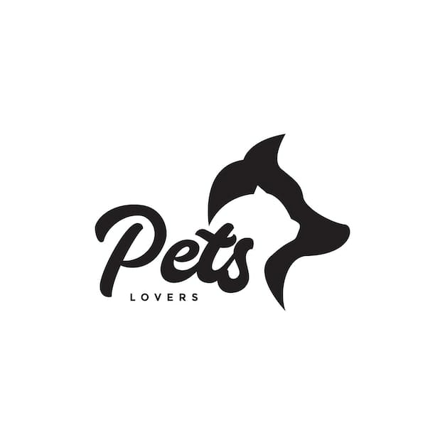
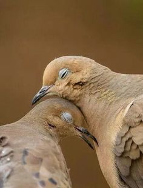
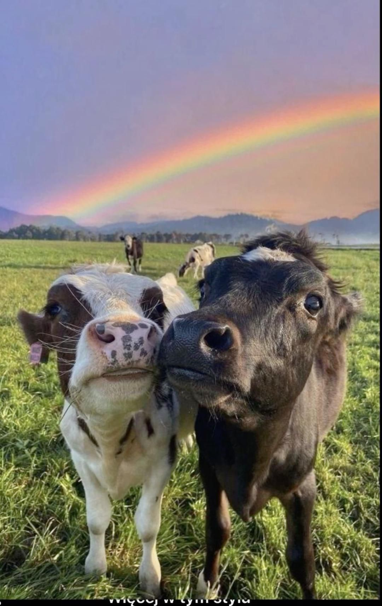
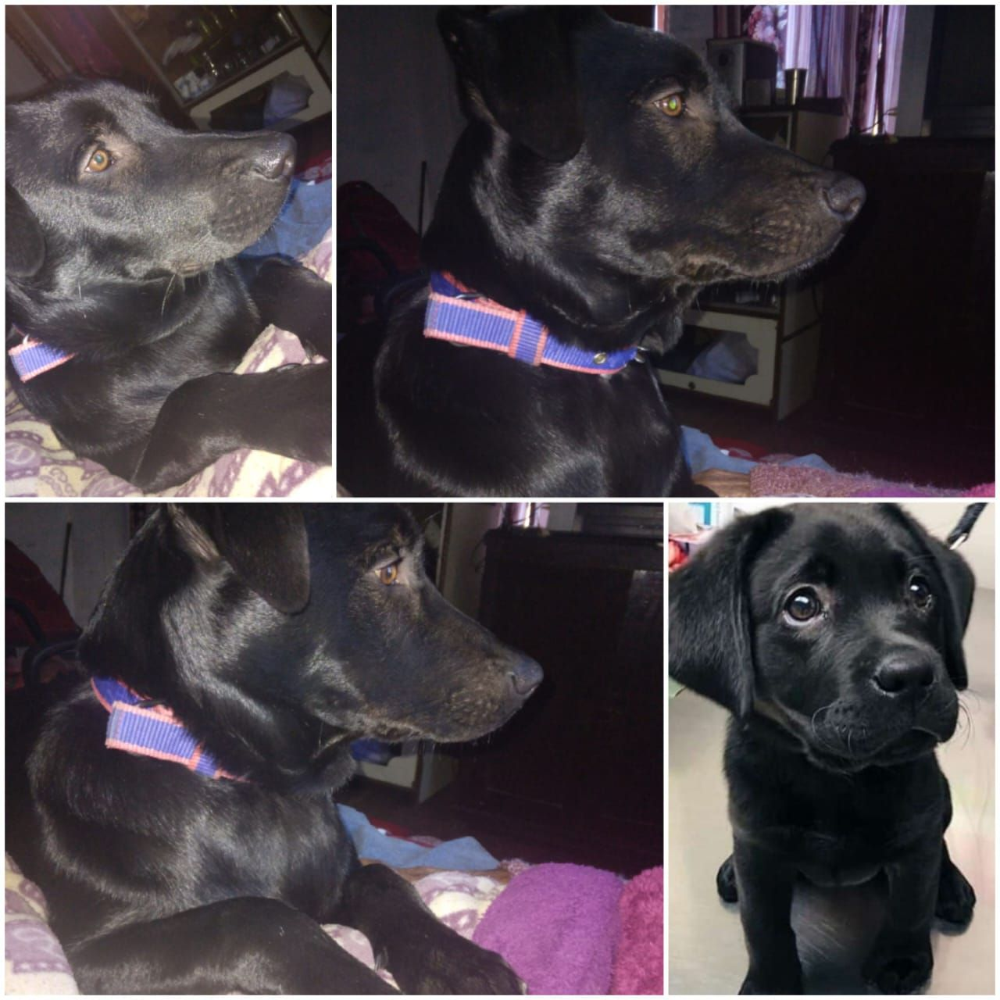
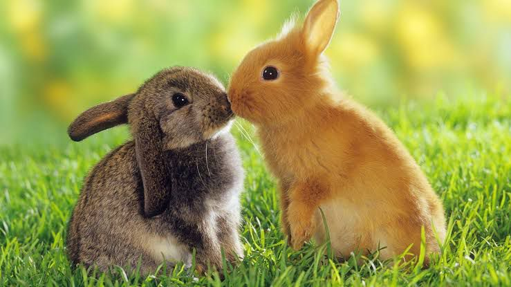
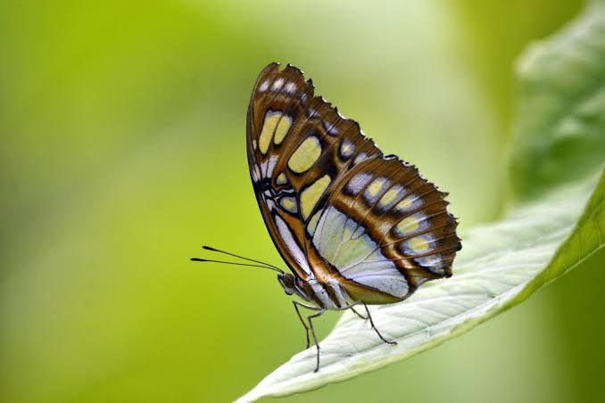
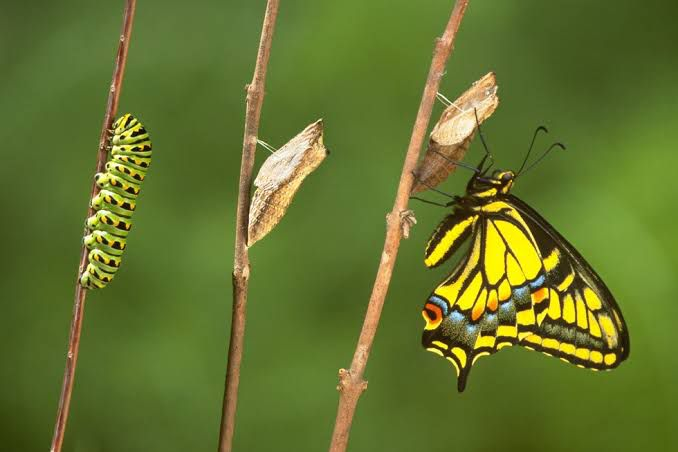

<div style="text-align:center;">

<div style="text-align:center; margin-top:40px;">
<a style="padding-right: 20px;" href="homein.html">topic</a>
<a style="padding-right: 20px;" href="about.html">about</a>
<a style="padding-right: 20px;" href="read more.html">read more</a>

<h1 style="font-size:50px; text-align:center;"> We love animals </h1>
<p style="size:20px; text-align:center; line-height: 30px;">Animals as Emotional Companions

In the modern world, animals, particularly pets, play a significant role in the emotional well-being of humans. They provide unconditional love, companionship, and emotional support. Studies have shown that interactions with pets can lower blood pressure, reduce stress, and even increase longevity. This therapeutic effect is the cornerstone of practices like animal-assisted therapy, which leverages the human-animal bond to aid in mental health treatments.</p>

<div style="text-align:center;"><a style="padding-right: 20px;"  href="https://www.google.com/">google</a>

<hr style="width: 60%;">

<h1 style="font-size:50px; text-align:center;"> our </h1>




<h1 style="font-size:20px; text-align:center;"> misty </h1>

<h1 style="font-size:50px; text-align:center;"> keep always smile </h1>
<p style="size:20px; text-align:center; line-height: 30px;">Love of animals can be shown in many different ways, between humans and animals and also just amongst animals. Animal rights advocates stand for the humane treatment of animals and fight for animal rights. This is one of the many ways someone could show love of animals..</p>




<h1 style="font-size:20px; text-align:center;"> tyson </h1>

<h1 style="font-size:50px; text-align:center;"> Love of animal </h1>
<p style="size:20px; text-align:center; line-height: 30px;"><h1 style="font-size:50px; text-align:center;"> My home </h1>

<p style="size:20px; text-align:center; line-height: 30px;">Love of animals can be shown in many different ways, between humans and animals and also just amongst animals. Animal rights advocates stand for the humane treatment of animals and fight for animal rights. This is one of the many ways someone could show love of animals..</p>
</p>

<h1 style="font-size:30px; text-align:center;"> I am rabit </h1>

<div style="text-align:center;">


<p style="size:20px; text-align:center; line-height: 30px;">To my mind, the life of a lamb is no less precious than that of a human being. ...
“It takes nothing away from a human to be kind to an animal.” ...
“You cannot share your life with a dog… or a cat, and not know perfectly well that animals have personalities and minds and feelings</p>


<h1 style="font-size:30px; text-align:center;"> fly world     . </h1>




<p style="size:30px; text-align:center; line-height: 30px;"> He who is cruel to animals becomes hard also in his dealings with men. We can judge the heart of a man by his treatment of animals. </p> 


<p style="size:30px; text-align:center; line-height: 30px;">
To my mind, the life of a lamb is no less precious than that of a human being. I should be unwilling to take the life of a lamb for the sake of the human body. I hold that, the more helpless a creature, the more entitled it is to the protection by man from the cruelty of man

 </p>


<p style="size:30px; text-align:center; line-height: 30px;">
It’s not enough to love animals; we must actively protect and preserve them. It’s our duty and responsibility as custodians of this planet.

 </p>

<h1 style="font-size:30px; text-align:left;">help Line number </h1>

<p style="size:30px; line-height: 20px;">

To help an animal who's in immediate physical danger or in urgent need of veterinary care, please call our emergency number:
 (0) 98201 22602. For general queries, please e-mail Info@petaindia.org or submit the form below


 </p>
<h1 style="font-size:30px; text-align:left;">contact us </h1>

<p style="size:30px; text-align:center; line-height: 30px;">

09998030393; Email:info@animalhelpline.in.

<h1 style="font-size:50px; text-align:center;"> Thankyou  . </h1>

 </p>

<p style="size:30px; text-align:right; line-height: 30px;">

by Manisha rajput

 </p>


